Next: Module brillouin - an Up: McPhase USERS MANUAL Previous: Programs of General Interest Contents Index
The crystal field ground state of a magnetic ion often can be
approximated by a doublet. In this description the crystal field
anisotropy enters by defining the saturation moment of this doublet
in  ,
, and
and  direction: denoting the two states of the doublet
by the non vanishing matrix elements of the angular momentum
operator can be abbreviated by
direction: denoting the two states of the doublet
by the non vanishing matrix elements of the angular momentum
operator can be abbreviated by
| 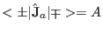 | 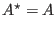 | 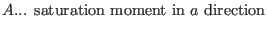 | |
| 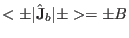 | 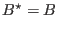 | 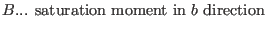 | (136) |
| 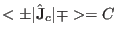 | 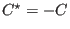 | 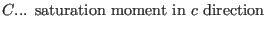 |
then the single ion Hamiltonian
 can be written as
can be written as
This Hamilton may be diagonalised yielding the 2 eigenvalues 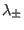, 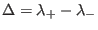:
| 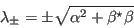 | (138) |
and the eigenvectors
| 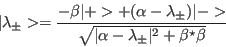 | (139) |
using Boltzmann statistics ( 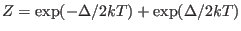) the expectation values of the magnetic moment can be calculated as
| 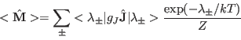 | (140) |
with
| 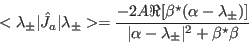 | (141) |
| 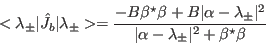 | (142) |
| 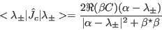 | (143) |
The magnetic energy 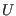 can be calculated
| 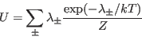 | (144) |
For the calculation of the magnetic excitations the program mcdisp needs also a function which calculates the transition matrix elements
| 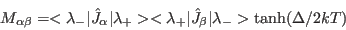 | (145) |
using the expressions
| 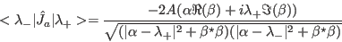 | (146) |
| 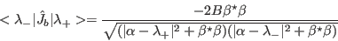 | (147) |
| 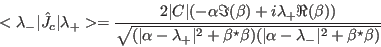 | (148) |
The module given in /examples/cecu2a/kramer.c can be compiled
by typing make in the directory /examples/cecu2a/ thus using the
/examples/cecu2a/makefile. It diagonalises
the Hamiltonian (166) and calculates the thermal expectation
value  of the vector
of the vector  . The moment
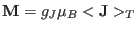
is returned to the mcphas program:
. The moment
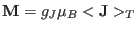
is returned to the mcphas program:
//
// example c file for dynamically loadable module of program
// mcphas ... it must not be c++, but pure c compiled with gcc and linked
// with ld !! The calculation has been compared to the internal (doublet)
// routine of mcphas
#include <cstdio>
#include <cmath>
#include <complex>
#include <vector.h>
#define MU_B 0.05788
#define K_B 0.0862
#define SMALL 1e-10
#define PI 3.14159265
// this is called directly after loading it into memory from dlopen
#ifdef __linux__
//extern "C" void _init(void)
#else
//extern "C" __declspec(dllexport)void _init(void)
#endif
//{ fprintf(stdout,"kramer.so: is loaded\n");}
// called just before removing from memory
#ifdef __linux__
//extern "C" void _fini(void)
#else
//extern "C" __declspec(dllexport) void _fini(void)
#endif
//{ fprintf(stdout,"kramer.so: is removed\n");}
//routine Icalc for kramers doublet
#ifdef __MINGW32__
extern "C" __declspec(dllexport) void Icalc(Vector & Jr,double * T, Vector & Hxc,Vector & Hext,double * g_J, Vector & MODPAR,char ** sipffile,
double * lnZ,double * U,ComplexMatrix & est)
#else
extern "C" void Icalc(Vector & Jr,double * T, Vector & Hxc,Vector & Hext,double * g_J, Vector & MODPAR,char ** sipffile,
double * lnZ,double * U,ComplexMatrix & est)
#endif
{ /*on input
T temperature[K]
gJmbHin vector of effective field [meV]
gJ Lande factor
MODPAR single ion parameter values (A, B, C corresponding to <+|Ja|->,<-|Jb|->,<+|Jc|->/i
MODPAR4= angle of rotation around c axis (deg)
MODPAR5= angle of rotation around new x axis (degree)
on output
J single ion momentum vector <J>
Z single ion partition function
U single ion magnetic energy
*/
// check dimensions of vector
if(Jr.Hi()!=3||Hxc.Hi()!=3||MODPAR.Hi()!=5)
{fprintf(stderr,"Error loadable module kramer.so: wrong number of dimensions - check number of columns in file mcphas.j or number of parameters in single ion property file\n");
exit(EXIT_FAILURE);}
Vector gjmbHin(1,Hxc.Hi());
gjmbHin=Hxc+(*g_J)*MU_B*Hext;
// rotate effective field
double sf=sin(MODPAR(4)*PI/180);
double cf=cos(MODPAR(4)*PI/180);
double st=sin(-MODPAR(5)*PI/180);
double ct=cos(-MODPAR(5)*PI/180);
Vector J(1,3);
Vector gjmbH(1,3);
Matrix rot(1,3,1,3);
rot(1,1)=cf; rot(1,2)=sf; rot(1,3)=0;
rot(2,1)=-ct*sf;rot(2,2)=ct*cf;rot(2,3)=-st;
rot(3,1)=-st*sf;rot(3,2)=st*cf;rot(3,3)=ct;
Matrix brot(1,3,1,3);
brot(1,1)=cf; brot(1,2)=-sf*ct; brot(1,3)=-st*sf;
brot(2,1)=sf;brot(2,2)=ct*cf;brot(2,3)=st*cf;
brot(3,1)=0.0 ;brot(3,2)=-st;brot(3,3)=ct;
//printf("%g %g %g\n",gjmbHin(1),gjmbHin(2),gjmbHin(3));
gjmbH=rot*gjmbHin;
//printf("%g %g %g\n",gjmbH(1),gjmbH(2),gjmbH(3));
double alpha, betar, betai, lambdap,lambdap_K_BT, lambdap2, expp, expm, np, nm;
double nennerp, nennerm, jap, jam, jbp, jbm, jcp, jcm,Z;
double alpha_lambdap,alphaplambdap,alphaxlambdap;
alpha = MODPAR[2] * gjmbH[2];
betar = -MODPAR[1] * gjmbH[1];
betai = -MODPAR[3] * gjmbH[3];
lambdap2 = alpha * alpha + betar * betar + betai * betai;
lambdap = sqrt (lambdap2);
lambdap_K_BT=lambdap/K_B/(*T);
if (lambdap_K_BT>700){lambdap_K_BT=700;}
if (lambdap_K_BT<-700){lambdap_K_BT=-700;}
expm = exp (lambdap_K_BT);
expp = 1/expm; //=exp (-lambdap_K_BT);
Z = expp + expm;
(*lnZ)=log(Z);
np = expp / Z;
nm = expm / Z;
(*U)=lambdap*(np-nm); // energy
//printf("T=%g expp=%g expm=%g \n",(*T),expp,expm);
alphaxlambdap=alpha*lambdap;
alpha_lambdap=alpha-lambdap;
alphaplambdap=alpha+lambdap;
nennerp= 2.0*(-alphaxlambdap+lambdap2);
nennerm= 2.0*(alphaxlambdap+lambdap2);
if (nennerp > SMALL)
{
jap = -MODPAR[1] * 2.0 * betar * (alpha_lambdap) / nennerp;
jbp = MODPAR[2] * (2.0 * alpha*alpha_lambdap) / nennerp;
jcp = -2.0 * MODPAR[3] * betai * (alpha_lambdap) / nennerp;
}
else
{
jap = 0;
if (alpha * alpha > SMALL)
{
jbp = -copysign (MODPAR[2], alpha);
}
else
{
jbp = 0;
}
jcp = 0;
}
if (nennerm > SMALL)
{
jam = -MODPAR[1] * 2.0 * betar * (alphaplambdap) / nennerm;
jbm = MODPAR[2] * (2.0 * alpha*alphaplambdap) / nennerm;
jcm = -2.0 * MODPAR[3] * betai * (alphaplambdap) / nennerm;
}
else
{
jam = 0;
if (alpha * alpha > SMALL)
{
jbm = copysign (MODPAR[2], alpha);
}
else
{
jbm = 0;
}
jcm = 0;
}
J[1] = np * jap + nm * jam;
J[2] = np * jbp + nm * jbm;
J[3] = np * jcp + nm * jcm;
// printf ("np=%g nm=%g jap=%g jbp=%g jcp=%g jam=%g jbm=%g jcm=%g \n",np,nm,jap,jbp,jcp,jam,jbm,jcm);
// printf ("gjmbHa=%g gjmbHb=%g gjmbHc=%g Ja=%g Jb=%g Jc=%g \n", gjmbH[1], gjmbH[2], gjmbH[3], J[1], J[2], J[3]);
//printf("J %g %g %g\n",J(1),J(2),J(3));
Jr=brot*J;
//printf("J %g %g %g\n",Jr(1),Jr(2),Jr(3));
return;
}
#ifdef __MINGW32__
extern "C" __declspec(dllexport) void mcalc(Vector & Jr,double * T, Vector & Hxc,Vector & Hext,double * g_J, Vector & MODPAR,char ** sipffile,
ComplexMatrix & est)
#else
extern "C" void mcalc(Vector & Jr,double * T, Vector & Hxc,Vector & Hext,double * g_J, Vector & MODPAR,char ** sipffile,
ComplexMatrix & est)
#endif
{ double U,lnz;
Icalc(Jr,T, Hxc,Hext,g_J,MODPAR,sipffile,&U,&lnz,est);
Jr*=(*g_J);
}
/**************************************************************************/
// for mcdisp this routine is needed
#ifdef __MINGW32__
extern "C" __declspec(dllexport) int du1calc(int & tn,double & T, Vector & Hxc,Vector & Hext,double * g_J,Vector & MODPAR, char ** sipffile,
ComplexVector & u1r,float & delta,int & n, int & nd,ComplexMatrix & est)
#else
extern "C" int du1calc(int & tn,double & T, Vector & Hxc,Vector & Hext,double * g_J,Vector & MODPAR, char ** sipffile,
ComplexVector & u1r,float & delta,int & n, int & nd,ComplexMatrix & est)
#endif
{
/*on input
tn transition-number - meaningless for kramers doublet, because there is only one transition
MODPAR A,M,Ci...saturation moment/gJ[MU_B] of groundstate doublet in a.b.c direction
g_J lande factor
T temperature[K]
gjmbH vector of effective field [meV]
on output
delta splitting of kramers doublet [meV]
u1r(i) <-|Ji-<Ji>|+> sqrt(tanh(delta/2kT))
*/
double alpha, betar, betai, lambdap,lambdap_K_BT, lambdap2, expp, expm, np, nm;
double nennerp, nennerm, nenner;
complex<double> ja,jb,jc,i(0,1),jap,jbp,jcp,jam,jbm,jcm;
double alpha_lambdap,alphaplambdap,alphaxlambdap;
double Z,lnz,u;
static int pr;
static Vector gjmbHin(1,3);
gjmbHin=Hxc+(*g_J)*MU_B*Hext;
static Vector Jin(1,3);
static Vector J(1,3);
static ComplexVector u1(1,3);
// clalculate thermal expectation values (needed for quasielastic scattering)
Jin=0;if(T>0){ Icalc(Jin,&T,Hxc,Hext,g_J,MODPAR,sipffile,&lnz,&u,est);}
else {T=-T;}
// rotate effective field
double sf=sin(MODPAR(4)*PI/180);
double cf=cos(MODPAR(4)*PI/180);
double st=sin(-MODPAR(5)*PI/180);
double ct=cos(-MODPAR(5)*PI/180);
Vector gjmbH(1,3);
Matrix rot(1,3,1,3);
rot(1,1)=cf; rot(1,2)=sf; rot(1,3)=0;
rot(2,1)=-ct*sf;rot(2,2)=ct*cf;rot(2,3)=-st;
rot(3,1)=-st*sf;rot(3,2)=st*cf;rot(3,3)=ct;
Matrix brot(1,3,1,3);
brot(1,1)=cf; brot(1,2)=-sf*ct; brot(1,3)=-st*sf;
brot(2,1)=sf;brot(2,2)=ct*cf;brot(2,3)=st*cf;
brot(3,1)=0.0 ;brot(3,2)=-st;brot(3,3)=ct;
gjmbH=rot*gjmbHin;
J=rot*Jin;
pr=0;
if (tn<0) {pr=1;tn*=-1;}
alpha = MODPAR[2] * gjmbH[2];
betar = -MODPAR[1] * gjmbH[1];
betai = -MODPAR[3] * gjmbH[3];
lambdap2 = alpha * alpha + betar * betar + betai * betai;
lambdap = sqrt (lambdap2);
lambdap_K_BT=lambdap/K_B/T;
if (lambdap_K_BT>700){lambdap_K_BT=700;}
if (lambdap_K_BT<-700){lambdap_K_BT=-700;}
expm = exp (lambdap_K_BT);
expp = 1/expm; //=exp (-lambdap_K_BT);
Z = expp + expm;
np = expp / Z;
nm = expm / Z;
alphaxlambdap=alpha*lambdap;
alpha_lambdap=alpha-lambdap;
alphaplambdap=alpha+lambdap;
nennerp= 2.0*(-alphaxlambdap+lambdap2);
nennerm= 2.0*(alphaxlambdap+lambdap2);
if (tn==2)
{delta=2*lambdap; //set delta !!!
nenner=sqrt(nennerp*nennerm);
if (nenner > SMALL)
{
ja = -MODPAR[1] * 2.0*(alpha * betar+i * betai * lambdap) / nenner;
jb = -MODPAR[2] * 2.0 * (betar*betar+betai*betai) / nenner;
jc = -MODPAR[3] * 2.0*(alpha*betai -i *betar*lambdap) / nenner;
}
else
{
if (alpha > SMALL)
{ja = MODPAR[1]; // <-| is the ground state
jb = 0;
jc = -i*MODPAR[3];
}
else
{ja = MODPAR[1]; // <+| is the ground state
jb = 0;
jc = i*MODPAR[3];
}
}
if (delta>SMALL)
{// now lets calculate mat
u1(1)=ja*sqrt(nm-np);
u1(2)=jb*sqrt(nm-np);
u1(3)=jc*sqrt(nm-np);
} else
{// quasielastic scattering needs epsilon * nm / KT ....
u1(1)=ja*sqrt(nm/K_B/T);
u1(2)=jb*sqrt(nm/K_B/T);
u1(3)=jc*sqrt(nm/K_B/T);
}
}
else
{ delta=-SMALL; // transition within the same level
if (nennerp > SMALL)
{
jap = -MODPAR[1] * 2.0 * betar * (alpha_lambdap) / nennerp;
jbp = MODPAR[2] * (2.0 * alpha*alpha_lambdap) / nennerp;
jcp = -2.0 * MODPAR[3] * betai * (alpha_lambdap) / nennerp;
}
else
{
jap = 0;
if (alpha * alpha > SMALL)
{
jbp = -copysign (MODPAR[2], alpha);
}
else
{
jbp = -MODPAR[2];
}
jcp = 0;
}
if (nennerm > SMALL)
{
jam = -MODPAR[1] * 2.0 * betar * (alphaplambdap) / nennerm;
jbm = MODPAR[2] * (2.0 * alpha*alphaplambdap) / nennerm;
jcm = -2.0 * MODPAR[3] * betai * (alphaplambdap) / nennerm;
}
else
{
jam = 0;
if (alpha * alpha > SMALL)
{
jbm = copysign (MODPAR[2], alpha);
}
else
{
jbm = MODPAR[2];
}
jcm = 0;
}
if (tn==1)
{// now lets calculate mat
u1(1)=(jam-J(1))*sqrt(nm/K_B/T);
u1(2)=(jbm-J(2))*sqrt(nm/K_B/T);
u1(3)=(jcm-J(3))*sqrt(nm/K_B/T);
}else{ // tn = 3 in this case
// now lets calculate mat
u1(1)=(jap-J(1))*sqrt(np/K_B/T);
u1(2)=(jbp-J(2))*sqrt(np/K_B/T);
u1(3)=(jcp-J(3))*sqrt(np/K_B/T);
}
}
if (pr==1) printf ("delta=%4.6g meV\n",delta);
// rotate back mat(i,j)
for(int i=1;i<=3;++i)for(int j=1;j<=3;++j){
u1r(i)=0.0;
for(int i1=1;i1<=3;++i1){
u1r(i)+=brot(i,i1)*u1(i1);
}}
return 3;// kramers doublet has always exactly one transition + 2 levels (quasielastic scattering)!
}
/**************************************************************************/
// for mcdisp this routine is needed
#ifdef __MINGW32__
extern "C" __declspec(dllexport) int dm1(int & tn,double & T, Vector & Hxc,Vector & Hext,double * g_J,Vector & MODPAR, char ** sipffile,
ComplexVector & m1,float & maxE,ComplexMatrix & est)
#else
extern "C" int dm1(int & tn,double & T, Vector & Hxc,Vector & Hext,double * g_J,Vector & MODPAR, char ** sipffile,
ComplexVector & m1,float & maxE,ComplexMatrix & est)
#endif
{int nnt,n,nd;
nnt=du1calc(tn,T,Hxc,Hext,g_J,MODPAR,sipffile,m1,maxE,n,nd,est);m1*=(*g_J);return nnt;
}
//